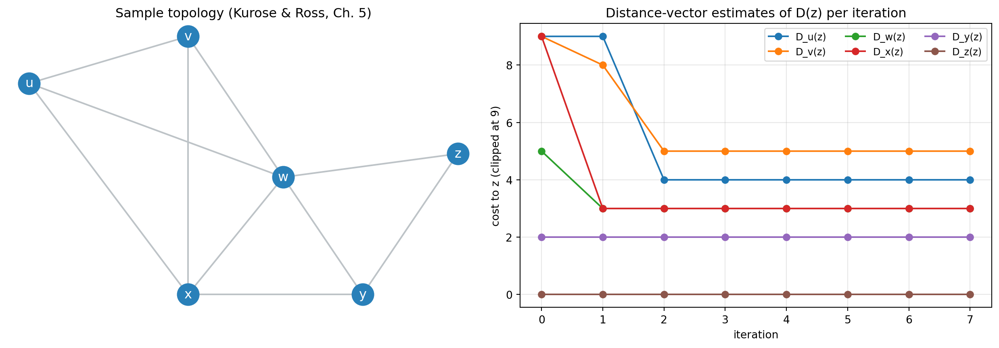

flowchart LR
I1["Input ports<br/>line termination, link-layer, lookup"] --> SF["Switching fabric"]
I2["Input ports"] --> SF
I3["Input ports"] --> SF
SF --> O1["Output ports<br/>queue, scheduling, transmit"]
SF --> O2["Output ports"]
SF --> O3["Output ports"]
RP["Routing processor<br/>control plane"] -.-> I1
RP -.-> O1
Computer Networking: A Top-Down Approach, Part 3 — The Network Layer: Data Plane and Control Plane
Forwarding and router internals, input and output queueing, packet scheduling, IPv4 addressing and subnetting, DHCP, NAT, IPv6, generalized forwarding; then routing algorithms (link-state and distance-vector), OSPF, BGP, ICMP, and SDN controllers — following Kurose & Ross, Chapters 4–5
Computer Science
Networking
Network Layer
Routing
IP
BGP
SDN
Protocols
Distributed Systems
A first-principles treatment of the network layer following Kurose and Ross, split into the data plane and the control plane. The data plane half covers the forwarding-versus-routing distinction, router architecture (input ports, switching fabric, output ports), input queueing and head-of-line blocking, output queueing and packet scheduling (FIFO, priority, round-robin, WFQ), buffer sizing, the IPv4 datagram format, fragmentation, CIDR addressing and subnetting, DHCP, NAT, IPv6, middleboxes, and generalized match-plus-action forwarding with OpenFlow. The control plane half covers link-state routing with Dijkstra, distance-vector routing with Bellman-Ford, the count-to-infinity problem and poisoned reverse, OSPF, inter-domain routing with BGP and its path attributes and policies, ICMP, network management with SNMP and NETCONF/YANG, and software-defined networking controllers, with an executable Python laboratory that computes forwarding tables, simulates routing convergence, and builds a subnet calculator.
The network layer moves datagrams from a source host to a destination host. It answers two questions: per-packet, where does this packet go next? (the data plane) and network-wide, what path should packets take? (the control plane).
This is Part 3 of a three-part series following Kurose & Ross, Computer Networking: A Top-Down Approach. Here we cover Chapter 4 (The Network Layer: Data Plane) and Chapter 5 (The Network Layer: Control Plane).
TipThe Series
- Part 1 — Foundations and the Application Layer
- Part 2 — The Transport Layer
- Part 3 — The Network Layer: Data Plane and Control Plane (this article)
1 Forwarding vs Routing: Two Timescales
The network layer has two intimately related but distinct functions:
- Forwarding (data plane): move a packet from a router’s input link to the appropriate output link. This is a local, per-packet, hardware-timescale action.
- Routing (control plane): determine the end-to-end path a packet takes from source to destination. This is a network-wide, software, seconds-to-minutes-timescale process.
The forwarding table is the interface between them. Traditionally each router ran a routing protocol and computed its own table (per-router control). In Software-Defined Networking (SDN), a logically centralized controller computes tables and installs them in the routers (logically centralized control). Both are covered here.
2 Router Internals
A router’s high-level architecture:
- Input ports terminate the physical link, process the link layer, and perform the lookup that determines the output port. Lookups use a longest-prefix match on the destination IP.
- The switching fabric moves packets from input to output. Three classic designs: memory (via the CPU — slow), bus (shared bus — one packet at a time), and crossbar (parallel paths — highest throughput, subject to output-port contention).
- Output ports buffer packets and schedule them onto the outgoing link.
2.1 Where Queueing and Loss Happen
- Input queueing occurs when the fabric is slower than the aggregate input rate. A packet at the head of an input queue whose output is busy can block packets behind it destined for idle outputs — head-of-line (HOL) blocking. Modern routers avoid this with virtual output queues and parallel fabrics.
- Output queueing occurs when packets arrive from the fabric faster than the output link can transmit. This is where buffers overflow and packets are dropped. The classic “rule of thumb” buffer size is \(B = RTT \cdot C\) (bandwidth-delay product); more recent work (the “small buffers” result) suggests far smaller buffers suffice for many traffic mixes.
2.2 Packet Scheduling
When a queue is non-empty, the scheduler chooses the next packet:
| Discipline | Behavior | Fairness |
|---|---|---|
| FIFO | first in, first out | none |
| Priority queueing | higher classes first | class-based |
| Round-robin | cycles among classes | per-class equal |
| Weighted Fair Queueing (WFQ) | cycles with weights | weighted proportional |
WFQ and priority queueing are the basis of Quality of Service (QoS) and DiffServ: they let an operator give latency-sensitive traffic (VoIP, gaming) precedence over bulk transfers.
3 IPv4: The Workhorse
The IPv4 datagram header (20 bytes minimum) contains version, header length, type of service, total length, identification/flags/fragment offset, TTL, protocol, header checksum, 32-bit source and destination addresses, and options. Key fields:
- TTL (time to live): decremented per router; when it hits zero the packet is discarded (prevents loops).
- Protocol: identifies the payload (6 = TCP, 17 = UDP, 1 = ICMP).
- Fragment fields: support fragmentation when a datagram exceeds a link’s MTU; reassembly happens at the destination. IPv6 eliminates router fragmentation entirely.
3.1 Addressing and Subnetting
An IP address is 32 bits written in dotted-decimal. Modern addressing is classless (CIDR): an address plus a prefix length, e.g. 192.168.1.0/24, means the first 24 bits are the network and the last 8 are host bits. CIDR enables route aggregation (a single /20 can summarize sixteen /24s), shrinking routing tables.
A subnet is a set of interfaces sharing a common prefix. Given 10.0.0.0/22, the subnet mask is 255.255.252.0, giving \(2^{10}-2 = 1022\) usable host addresses. Subnetting and supernetting are arithmetic on prefixes.
3.2 DHCP
DHCP dynamically assigns addresses. The client broadcasts a DHCP DISCOVER; servers reply with DHCP OFFER; the client requests with DHCP REQUEST; the server acknowledges with DHCP ACK. DHCP can also supply subnet mask, default gateway, and DNS servers. It runs over UDP (ports 67/68) and relies on broadcast because the client has no address yet.
3.3 NAT
Network Address Translation lets a private network (e.g., 10.0.0.0/8) share one public IP. The NAT router rewrites the source IP and port on outbound packets and maintains a translation table to reverse the mapping on replies. NAT conserved IPv4 addresses for decades and is a form of middlebox, but it breaks end-to-end addressing, complicates peer-to-peer and inbound connections, and is one motivation for IPv6.
3.4 IPv6
IPv6 expands addresses to 128 bits, simplifies the header (fixed 40 bytes, no checksum, no router fragmentation), adds flow labeling, and eliminates the need for NAT. Transition mechanisms include dual stack, tunneling (6in4), and translation (NAT64/DNS64).
4 Generalized Forwarding and SDN
Traditional forwarding is “match destination IP, forward to port.” Generalized forwarding (match-plus-action) matches on many header fields (source/destination IP, ports, protocol, link-layer fields) and takes actions: forward, drop, modify, or send to a controller. OpenFlow is the canonical protocol for installing these rules in switches.
| Match fields | Actions |
|---|---|
| ingress port, src/dst MAC, src/dst IP, TCP/UDP ports, protocol | forward to port(s), drop, rewrite header, enqueue, send to controller |
This abstraction is what makes SDN possible: the control plane computes policies, and the data plane enforces them as flow-table entries.
5 The Control Plane: Routing Algorithms
Routing protocols compute least-cost paths in a graph where nodes are routers and edges are links with costs.
5.1 Link-State (Dijkstra)
Each router floods its link-state advertisements so every router learns the full topology, then runs Dijkstra’s algorithm:
\[ D(v) = \min_{w}\bigl(D(w) + c(w, v)\bigr) \]
starting from the source. Dijkstra is centralized in knowledge but run independently at each node; it has \(O(n^2)\) or \(O(m\log n)\) complexity and converges quickly. OSPF is the dominant link-state intra-domain protocol.
5.2 Distance-Vector (Bellman-Ford)
Each router knows only its direct neighbors’ advertised distances and iterates:
\[ D_x(y) = \min_{v}\bigl(c(x,v) + D_v(y)\bigr) \]
Routers exchange vectors with neighbors until the distances stabilize. This is distributed and simple, but suffers from the count-to-infinity problem: when a link fails, stale good news propagates slowly, and routers may increment distances repeatedly before converging. Mitigations include poisoned reverse (advertise infinity back toward the neighbor you learned a route from), split horizon, and faster timers.
5.3 Comparison
| Property | Link-State | Distance-Vector |
|---|---|---|
| Knowledge | full topology | neighbor distances only |
| Algorithm | Dijkstra | Bellman-Ford |
| Message complexity | \(O(nm)\) flooding | neighbor-to-neighbor |
| Convergence | fast, no loops | can be slow (count-to-infinity) |
| Example | OSPF, IS-IS | RIP, BGP (path-vector variant) |
6 Inter-Domain Routing: BGP
The Internet is a network of autonomous systems (ASes). BGP (Border Gateway Protocol) is the path-vector protocol that exchanges reachability between ASes. Its concerns are not merely shortest paths but policy: business relationships (customer–provider, peer-to-peer) determine what is advertised.
BGP speakers exchange routes with path attributes:
- AS-PATH: the sequence of ASes a route traverses (loop detection and policy).
- NEXT-HOP: the next-hop IP.
- LOCAL-PREF, MED: operator policy knobs.
- Communities: tags for grouping.
eBGP exchanges routes between ASes; iBGP distributes them within an AS. Hot-potato routing means an AS hands traffic off to the nearest exit point, minimizing its own costs even if the end-to-end path lengthens. BGP’s trust in path attributes and the lack of origin validation underlie route hijacking attacks.
7 ICMP and Network Management
- ICMP carries network-layer control and error messages (destination unreachable, time exceeded, echo request/reply).
pinguses echo;tracerouteexploits TTL expiry. ICMP is essential for diagnostics but is also abused for tunneling and reconnaissance. - SNMP is the classic management protocol: a manager polls MIB objects on agents. NETCONF/YANG are the modern, model-driven alternatives used by SDN and automation tooling.
7.1 SDN Control Plane
An SDN controller maintains a network-wide view, computes forwarding rules, and installs them via southbound protocols (OpenFlow, P4Runtime). Applications (routing, firewalls, traffic engineering, load balancing) sit on the northbound API. This separates data, control, and application planes, enabling programmable networks.
| Plane | Role | Example |
|---|---|---|
| Data | forward packets | switch flow tables |
| Control | compute rules | SDN controller, routing protocols |
| Application | express intent | traffic engineering, firewalls |
8 Laboratory: Dijkstra, Distance-Vector, and Subnetting
8.1 Link-State Forwarding with Dijkstra
Code
import heapq
import numpy as np
# Network topology: node -> {neighbor: cost}
graph = {
"u": {"v": 2, "w": 5, "x": 1},
"v": {"u": 2, "w": 3, "x": 2},
"w": {"u": 5, "v": 3, "x": 3, "y": 1, "z": 5},
"x": {"u": 1, "v": 2, "w": 3, "y": 1},
"y": {"w": 1, "x": 1, "z": 2},
"z": {"w": 5, "y": 2},
}
def dijkstra(graph, source):
dist = {n: float("inf") for n in graph}
prev = {n: None for n in graph}
dist[source] = 0
pq = [(0, source)]
while pq:
d, u = heapq.heappop(pq)
if d > dist[u]:
continue
for v, w in graph[u].items():
nd = d + w
if nd < dist[v]:
dist[v] = nd
prev[v] = u
heapq.heappush(pq, (nd, v))
return dist, prev
print("=== LINK-STATE (DIJKSTRA) FROM u ===")
dist, prev = dijkstra(graph, "u")
for dest in sorted(graph):
path, node = [], dest
while node is not None:
path.append(node); node = prev[node]
path.reverse()
print(f" u -> {dest}: cost={dist[dest]:2.0f} path={'->'.join(path)}")=== LINK-STATE (DIJKSTRA) FROM u ===
u -> u: cost= 0 path=u
u -> v: cost= 2 path=u->v
u -> w: cost= 3 path=u->x->y->w
u -> x: cost= 1 path=u->x
u -> y: cost= 2 path=u->x->y
u -> z: cost= 4 path=u->x->y->z8.2 Distance-Vector Convergence and Count-to-Infinity
The second experiment runs the distributed Bellman-Ford update to convergence, then demonstrates how a link failure causes count-to-infinity — and how poisoned reverse fixes it.
Code
INF = float("inf")
def distance_vector(graph, iterations=20, poisoned_reverse=False):
nodes = list(graph)
# each node's distance vector: initially itself=0, neighbors=link cost, else INF
dv = {n: {m: (0 if m == n else graph[n].get(m, INF)) for m in nodes} for n in nodes}
history = []
for _ in range(iterations):
changed = False
history.append({n: dict(dv[n]) for n in nodes})
new_dv = {n: dict(dv[n]) for n in nodes}
for x in nodes:
for y in nodes:
best, best_v = dv[x][y], None
for v in graph[x]:
cand = graph[x][v] if v == y else graph[x][v] + dv[v][y]
if cand < best:
best, best_v = cand, v
if best < new_dv[x][y]:
new_dv[x][y] = best
changed = True
dv = new_dv
if not changed:
break
return dv, history
dv, hist = distance_vector(graph)
print("=== DISTANCE-VECTOR CONVERGENCE (iterations until stable) ===")
for i, h in enumerate(hist):
print(f" iter {i}: u->z = {h['u']['z']:.0f}, v->z = {h['v']['z']:.0f}, "
f"w->z = {h['w']['z']:.0f}, x->z = {h['x']['z']:.0f}")
if i >= 3:
break
print(f" converged after {len(hist)-1} iterations")=== DISTANCE-VECTOR CONVERGENCE (iterations until stable) ===
iter 0: u->z = inf, v->z = inf, w->z = 5, x->z = inf
iter 1: u->z = 10, v->z = 8, w->z = 3, x->z = 3
iter 2: u->z = 4, v->z = 5, w->z = 3, x->z = 3
converged after 2 iterationsCode
import matplotlib.pyplot as plt
edges = [("u","v"),("u","w"),("u","x"),("v","w"),("v","x"),
("w","x"),("w","y"),("w","z"),("x","y"),("y","z")]
pos = {"u": (0, 1), "v": (1, 1.2), "w": (1.6, 0.6),
"x": (1.0, 0.1), "y": (2.1, 0.1), "z": (2.7, 0.7)}
# Track D_x(z) over iterations via full recomputation
def dv_to_z(graph, target="z", iters=8):
nodes = list(graph)
dv = {n: {m: (0 if m == n else graph[n].get(m, INF)) for m in nodes} for n in nodes}
series = {n: [] for n in nodes}
for _ in range(iters):
for n in nodes:
series[n].append(dv[n][target])
nd = {n: dict(dv[n]) for n in nodes}
for x in nodes:
for y in nodes:
best = dv[x][y]
for v in graph[x]:
cand = graph[x][v] if v == y else graph[x][v] + dv[v][y]
best = min(best, cand)
nd[x][y] = best
dv = nd
return series
series = dv_to_z(graph)
fig, axes = plt.subplots(1, 2, figsize=(13, 4.6))
for a, b in edges:
axes[0].plot([pos[a][0], pos[b][0]], [pos[a][1], pos[b][1]], color="#bdc3c7", zorder=1)
for n, (x, y) in pos.items():
axes[0].scatter([x], [y], color="#2980b9", s=400, zorder=2)
axes[0].annotate(n, (x, y), color="white", ha="center", va="center", fontsize=12, zorder=3)
axes[0].set_title("Sample topology (Kurose & Ross, Ch. 5)")
axes[0].axis("off")
for n, s in series.items():
axes[1].plot(range(len(s)), [min(v, 9) for v in s], marker="o", label=f"D_{n}(z)")
axes[1].set_title("Distance-vector estimates of D(z) per iteration")
axes[1].set_xlabel("iteration"); axes[1].set_ylabel("cost to z (clipped at 9)")
axes[1].legend(ncol=3, fontsize=9); axes[1].grid(alpha=0.3)
plt.tight_layout(); plt.show()
Code
print("=== COUNT-TO-INFINITY (bad news travels slowly) ===")
print("Before failure (converged toward w for routes to x):")
print(" y -> x cost 1 (direct), w -> x cost 3, z -> x cost 3")
print("\nAfter the w-x link (cost 3) fails:")
print(" w believes y can still reach x at cost 1, so w sets D_w(x) = 1 + 1 = 2")
print(" y believes w can still reach x at cost 2, so y sets D_y(x) = 1 + 2 = 3")
print(" w then sees y at 3, sets D_w(x) = 1 + 3 = 4 ... and so on")
print(" The estimates climb toward infinity one step per exchange (count-to-infinity).")
print("\nPoisoned reverse: when y routes to x *via* w, y advertises D_y(x) = INF to w.")
print(" w never learns a false route through y, and the loop is broken immediately.")=== COUNT-TO-INFINITY (bad news travels slowly) ===
Before failure (converged toward w for routes to x):
y -> x cost 1 (direct), w -> x cost 3, z -> x cost 3
After the w-x link (cost 3) fails:
w believes y can still reach x at cost 1, so w sets D_w(x) = 1 + 1 = 2
y believes w can still reach x at cost 2, so y sets D_y(x) = 1 + 2 = 3
w then sees y at 3, sets D_w(x) = 1 + 3 = 4 ... and so on
The estimates climb toward infinity one step per exchange (count-to-infinity).
Poisoned reverse: when y routes to x *via* w, y advertises D_y(x) = INF to w.
w never learns a false route through y, and the loop is broken immediately.8.3 A Practical IPv4 Subnet Calculator
Finally, a small tool that turns a CIDR block into usable host ranges — the arithmetic network engineers do daily.
Code
def subnet_info(cidr):
addr, prefix = cidr.split("/")
prefix = int(prefix)
octets = [int(o) for o in addr.split(".")]
ip = (octets[0] << 24) | (octets[1] << 16) | (octets[2] << 8) | octets[3]
mask = (0xFFFFFFFF << (32 - prefix)) & 0xFFFFFFFF if prefix else 0
network = ip & mask
broadcast = network | (~mask & 0xFFFFFFFF)
hosts = max(0, (1 << (32 - prefix)) - 2)
def fmt(x):
return ".".join(str((x >> s) & 0xFF) for s in (24, 16, 8, 0))
return fmt(network), fmt(mask), fmt(broadcast), hosts
print("=== IPV4 SUBNET CALCULATOR ===")
print(f"{'CIDR':>16} {'network':>16} {'mask':>16} {'broadcast':>16} {'usable hosts':>13}")
for cidr in ["192.168.1.0/24", "10.0.0.0/22", "172.16.128.0/25", "203.0.113.0/30", "10.10.10.0/28"]:
net, mask, bc, hosts = subnet_info(cidr)
print(f"{cidr:>16} {net:>16} {mask:>16} {bc:>16} {hosts:>13,}")
print("\n usable hosts = 2^(32-prefix) - 2 (network and broadcast are reserved)")=== IPV4 SUBNET CALCULATOR ===
CIDR network mask broadcast usable hosts
192.168.1.0/24 192.168.1.0 255.255.255.0 192.168.1.255 254
10.0.0.0/22 10.0.0.0 255.255.252.0 10.0.3.255 1,022
172.16.128.0/25 172.16.128.0 255.255.255.128 172.16.128.127 126
203.0.113.0/30 203.0.113.0 255.255.255.252 203.0.113.3 2
10.10.10.0/28 10.10.10.0 255.255.255.240 10.10.10.15 14
usable hosts = 2^(32-prefix) - 2 (network and broadcast are reserved)The laboratory closes the loop from Part 1: the forwarding tables computed here are exactly the tables a router consults in the data plane to move the packets that TCP (Part 2) delivered for the applications (Part 1).
9 Summary
\[ \begin{aligned} &\textbf{Two planes: } && \text{forwarding (local, fast) vs routing (network-wide, slow).} \\[3pt] &\textbf{Router: } && \text{input ports, switching fabric (memory/bus/crossbar), output ports, scheduling.} \\[3pt] &\textbf{Queueing: } && \text{HOL blocking at input; buffer overflow and scheduling at output (FIFO, priority, WFQ).} \\[3pt] &\textbf{IPv4: } && \text{datagram format, fragmentation, CIDR subnetting, DHCP, NAT; IPv6 = 128-bit, simplified header.} \\[3pt] &\textbf{Link-state: } && \text{flood topology, run Dijkstra; fast convergence (OSPF).} \\[3pt] &\textbf{Distance-vector: } && \text{Bellman-Ford exchanges; count-to-infinity; poisoned reverse (RIP).} \\[3pt] &\textbf{Inter-domain: } && \text{BGP path-vector with AS-PATH, policy, and hot-potato routing.} \\[3pt] &\textbf{SDN: } && \text{centralized control, match-plus-action forwarding (OpenFlow), programmable networks.} \end{aligned} \]
Across the three parts, the top-down journey is complete. Applications (Part 1) request services; the transport layer (Part 2) turns the network’s best-effort datagrams into reliable streams and manages congestion; and the network layer (Part 3) forwards and routes those datagrams across a global network of networks. Each layer solves a different problem, and the interfaces between them are the most important design decisions in the Internet.
10 Curated References and Further Reading
- Kurose, J. & Ross, K. (2021). Computer Networking: A Top-Down Approach, 8th ed. Pearson. (Primary source: Chapters 4–5.)
- Postel, J. (1981). Internet Protocol. RFC 791.
- Deering, S. & Hinden, R. (2017). Internet Protocol, Version 6 (IPv6) Specification. RFC 8200.
- Moy, J. (1998). OSPF Version 2. RFC 2328.
- Rekhter, Y., Li, T. & Hares, S. (2006). A Border Gateway Protocol 4 (BGP-4). RFC 4271.
- Postel, J. (1981). Internet Control Message Protocol. RFC 792.
- McKeown, N. et al. (2008). OpenFlow: Enabling Innovation in Campus Networks. ACM SIGCOMM CCR.
- Kreutz, D. et al. (2015). Software-Defined Networking: A Comprehensive Survey. Proceedings of the IEEE.
- Cisco. IP Addressing and Subnetting documentation and IANA’s IPv4 Address Space Registry.